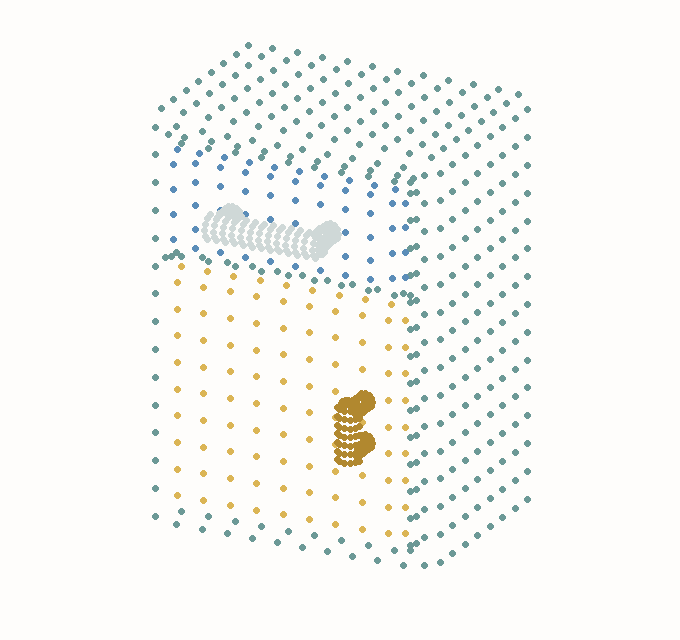
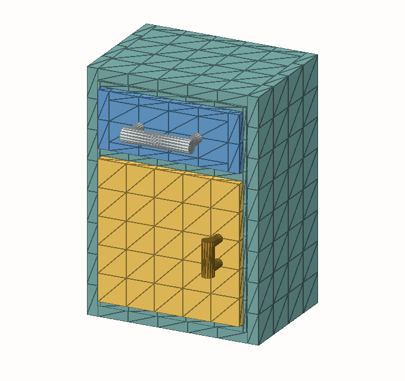
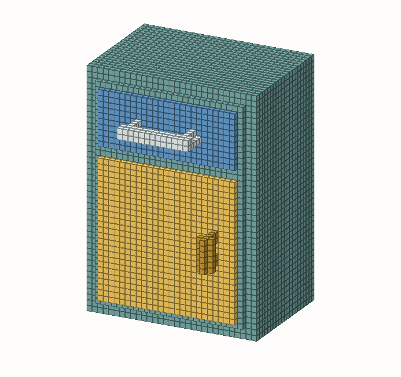
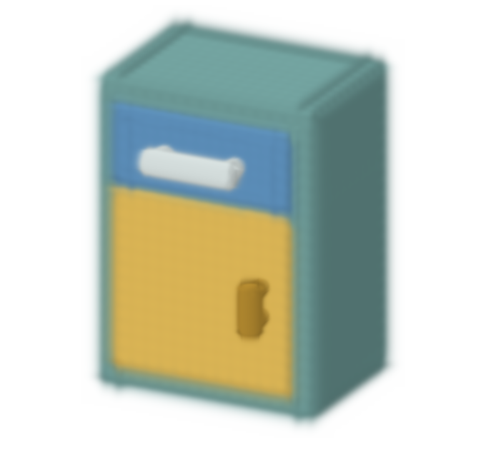
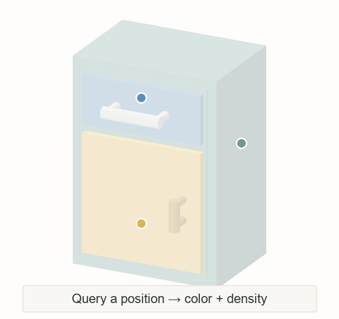

2.1 Overview: 3D representations
A. Representation
A photograph stores an image from one viewpoint. A 3D representation stores information about the cabinet in space, so software can inspect it or calculate views from other positions.
This chapter separates three questions: what 3D data is stored, how that data becomes a picture, and how we obtain the data from photographs or a prompt. The same cabinet appears throughout.
2.1.1 What is stored?
A representation is a way of describing an object with data. For the same cabinet, we might save individual 3D points, connected surface patches, values in grid cells, soft colored blobs, or a function that answers questions about locations in space.
The five examples below can describe the cabinet in 3D, but they store different information. Start with what each contains; the rendering group then explains how software uses it to draw a picture.
The drawings below use one teaching cabinet: a teal body, a blue drawer, and a gold door. Both pull handles are fixed to their parts. The silver handle moves with the drawer; the gold handle moves with the door. We use these same parts in Chapter 3.

Point cloud
Store: a list of 3D positions, sometimes with colors.
Points can outline the drawer and handle. The list does not specify which points form a continuous surface.

Mesh
Store: 3D corner positions, called vertices, and surface patches, called faces, connecting them.
The faces describe the cabinet’s surfaces. A face can have three sides (a triangle) or four (a quad).

Voxel grid
Store: values in small 3D cells, called voxels. Think of a pixel grid extended into depth.
For this cabinet, each cell records whether its center lies in the cabinet material. We draw occupied cells as little boxes and leave empty cells clear. Smaller cells can capture thinner details, with more cells to store and process.

3D Gaussians
Store: each blob’s position, size, orientation, opacity, and appearance.
Each blob is a soft shape in 3D. Its opacity controls how strongly its color contributes and hides what is behind it. Many blue blobs can form the drawer’s image.

Radiance field
Describe: the color seen from a direction and the density at locations in 3D. Density controls how strongly a small region blocks the view.
Near the drawer front, the answers may be blue and strongly blocking; in the air, almost no blocking. The dots mark example queries, not a stored point cloud.
The voxel view uses the same cabinet geometry as the other examples. Its stepped outline comes from the size of the grid cells.
These representations contain information in 3D. The image-making steps are grouped under Rendering, Sections 2.4–2.6.
Further reading: point clouds, mesh structure, 3D Gaussians, voxel grids, and NeRF’s radiance field.
2.1.2 Representation, method, and renderer
Making a 3D cabinet involves three different roles: a method creates the data, a representation specifies what is kept, and a renderer turns it into a picture.
- Representation
- What information do we keep? For example, the cabinet’s vertices and faces, or a set of 3D Gaussians.
- Reconstruction or generation method
- How do we obtain that information? Reconstruction tries to recover the cabinet seen in photographs. A generator can propose a cabinet using patterns learned from many examples, including guesses about unseen parts.
- Renderer
- How do we make a picture from it? Software uses the representation and a camera to calculate a 2D image.
A method’s supported outputs depend on its design. Some methods produce surface geometry; some produce Gaussians; others support several representations. We first learn what those outputs contain, then follow how methods create them.
For example: a method creates the cabinet as a mesh → we save its surface data → a mesh renderer draws a front view. The saved 3D data can also be used to draw a side view. A single method can support several output representations; TRELLIS in Section 2.10 is one example.
The workflow map in Section 2.7 connects these roles and shows where rendering is reused during reconstruction.
2.1.3 Follow the same representation across the chapter
Read across a row to find the same representation in all three groups: what it contains, how it makes an image, and how photographs can help build it.
| Representation | A · What is stored? | B · How is it rendered? | C · How is it reconstructed? |
|---|---|---|---|
| Mesh | 2.2 · Surfaces | 2.4 · Camera and visible faces | 2.7.7 · Points to surfaces |
| 3D Gaussians | 2.3.1 · Blobs | 2.5 · Project and blend | 2.8 · Fit with 3DGS |
| Radiance field | 2.3.2 · Color and density | 2.6 · Rays to pixels | 2.9 · Train a NeRF |
The shared camera concepts appear in 2.4; camera and geometry estimation from photographs appears in 2.7. Point clouds and voxel grids are introduced alongside meshes in this overview. The later worked examples focus on meshes, Gaussians, and radiance fields.
2.10 · Generation with TRELLIS introduces another way to create these representations: a pretrained system proposes an asset from an input image. Its supported outputs connect back to the representation and rendering groups.